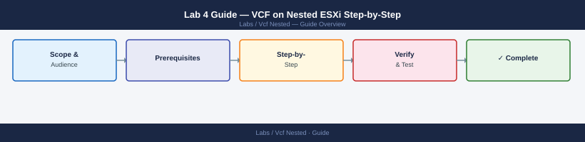

Lab 4 Guide — VCF on Nested ESXi Step-by-Step¶
Applies to: Lab / Nested Environment

Phase 1 — Prepare Four Nested ESXi Hosts¶
Build four nested ESXi VMs using the same process as Lab 1 (Phase 2–3). VCF requires exactly 4 hosts for the initial management domain.
1.1 VM settings for each VCF nested ESXi host
| Setting | Value |
|---|---|
| vCPU | 8 (minimum 4) |
| RAM | 24 GB (minimum 16 GB) |
| Boot disk | 32 GB thin |
| vSAN cache disk | 20 GB (mark as SSD via SATP rule — see Lab 2) |
| vSAN capacity disk | 200 GB |
| NICs | 2× VMXNET3 |
| Advanced config | vhv.enable = TRUE, disk.EnableUUID = TRUE |
1.2 Naming and IP scheme
| Host | Hostname | Management IP |
|---|---|---|
| ESXi-01 | esxi-01.vcf.lab |
192.168.10.11 |
| ESXi-02 | esxi-02.vcf.lab |
192.168.10.12 |
| ESXi-03 | esxi-03.vcf.lab |
192.168.10.13 |
| ESXi-04 | esxi-04.vcf.lab |
192.168.10.14 |
1.3 DNS and NTP
For VCF, DNS is mandatory. Add forward and reverse entries for all 4 ESXi hosts, plus Cloud Builder, vCenter, NSX Manager (×3), and SDDC Manager. Use a VM running BIND or Windows DNS, or add all entries to the physical host's /etc/hosts file.
All hosts must point to the same NTP source (e.g., pool.ntp.org or your router):
# On each nested ESXi host (DCUI > Configure Management Network > Custom DNS Suffixes / NTP)
esxcli system ntp set --server pool.ntp.org
esxcli system ntp set --enabled true
Common errors
Error: Unknown option or flag '--server' — Use esxcli system ntp set --servers=pool.ntp.org with --servers= instead of --server.
Error: Unable to set NTP server: Connection refused — Ensure the NTP service is running with esxcli system service start ntpd before configuring servers.
Phase 2 — Fill In the VCF Configuration Workbook¶
The VCF configuration workbook (Excel file) is the primary input to Cloud Builder. Download it from VMware Customer Connect alongside the Cloud Builder OVA.
Key workbook tabs to complete:
| Tab | What to fill in |
|---|---|
| Hosts and Networks | Management, vMotion, vSAN, TEP IP ranges; VLANs; MTU |
| Credentials | Root passwords for all ESXi hosts; SSO password |
| vCenter | FQDN, IP, SSO domain (vcf.local) |
| NSX | NSX Manager cluster FQDNs, IPs (3 nodes); NSX Admin password |
| SDDC Manager | FQDN, IP, admin/vcf user passwords |
| vSAN | Disk claim mode (static recommended for nested) |
| License Keys | vSphere, vSAN, NSX-T Enterprise, VCF |
Workbook tips for nested lab:
- Use the same VLAN (e.g., VLAN 0 / untagged) for all network types to simplify physical portgroup configuration
- Set all MTUs to 9000 in the workbook — Cloud Builder validates against host MTU; set vSwitch MTU on physical host to 9000 as well (or use 1600 minimum and override the MTU check)
- DNS suffix:
vcf.lab(or your chosen lab domain)
Phase 3 — Deploy Cloud Builder¶
3.1 Deploy the Cloud Builder OVA
In vCenter on the physical host:
- Right-click a host > Deploy OVF Template
- Upload Cloud Builder OVA
- Configuration:
- IP: 192.168.10.5
- Hostname:
cloudbuilder.vcf.lab - DNS, gateway, NTP same as lab
- Admin password: set at deploy time
- Complete and power on (~5 min)
3.2 Log into Cloud Builder
Access Cloud Builder UI: https://192.168.10.5
Default credentials: admin / (password you set during OVA deployment)
Phase 4 — Run Pre-Deployment Validation¶
4.1 Upload the configuration workbook
In Cloud Builder UI: Upload Workbook → select your completed .xlsx file.
Cloud Builder parses the workbook and builds the deployment plan.
4.2 Run validation
Click Validate — Cloud Builder runs ≈25 checks covering:
- DNS forward and reverse resolution for all components
- NTP reachability from all ESXi hosts
- Management network connectivity between all hosts
- vSAN disk availability and tagging
- License key validity
- Password complexity compliance
4.3 Fix validation failures
Common failures in nested environments:
| Failure | Fix |
|---|---|
| DNS resolution failed | Add missing forward/reverse DNS entries; test with nslookup <fqdn> from each host |
| NTP unreachable | Allow NTP (UDP 123) from nested network; or use a local NTP server |
| MTU mismatch | Set physical vSwitch MTU to match workbook value, or reduce workbook MTU to 1600 |
| vSAN disk not found | Set disk.EnableUUID = TRUE, mark SSD via SATP rule, rescan |
| Password policy fail | Ensure root passwords have uppercase + digit + special char |
| License invalid | Use 60-day eval keys from Customer Connect |
Some nested-specific checks can be bypassed if validation is non-critical. Cloud Builder provides an Ignore option for specific check failures — use this judiciously and only for warnings, not errors.
Phase 5 — Deploy the Management Domain¶
5.1 Start deployment
In Cloud Builder UI: after all validations pass (or after ignoring acceptable warnings), click Deploy SDDC.
Cloud Builder deploys components in this order:
- vCenter Server
- vSAN cluster (formats disks, builds datastore)
- NSX Manager × 3 (clustered)
- SDDC Manager
- Post-configuration (licenses, networking, inventory)
5.2 Monitor progress
Cloud Builder shows a live task timeline. Total time: 2–4 hours for a nested environment.
If a task fails, Cloud Builder logs are at /var/log/vmware/vcf/ on the Cloud Builder VM:
2024-01-15T09:42:33.847Z [INFO] Validating infrastructure prerequisites...
2024-01-15T09:42:45.123Z [INFO] Network connectivity check: PASSED
2024-01-15T09:43:12.456Z [INFO] Storage validation: 2.8TB available, 2.5TB required - OK
2024-01-15T09:43:28.789Z [INFO] vSAN cluster health: HEALTHY
2024-01-15T09:44:01.234Z [INFO] Starting VCF bringup sequence...
2024-01-15T09:44:15.567Z [INFO] Deploying SDDC Manager VM (vcf-sddc-mgr-01)...
2024-01-15T09:45:32.891Z [INFO] SDDC Manager IP assigned: 192.168.10.20
2024-01-15T09:46:08.124Z [INFO] Configuring management domain networking...
2024-01-15T09:47:22.456Z [INFO] vCenter Server deployment in progress...
2024-01-15T09:48:45.789Z [INFO] Waiting for vCenter services to initialize...
2024-01-15T09:49:33.012Z [INFO] Management domain bringup: 67% complete
2024-01-15T09:50:11.345Z [INFO] Configuring NSX Manager cluster...
2024-01-15T09:51:28.678Z [INFO] NSX overlay network setup: COMPLETED
Common errors
tail: cannot open '/var/log/vmware/vcf/bringup/vcf-bringup.log' for reading: No such file or directory — Verify you are logged into the Cloud Builder VM and the bringup process has started; check /var/log/vmware/vcf/ exists first.
Permission denied — Run the command with sudo or ensure your user account has read permissions on the log file.
Phase 6 — Post-Deployment¶
6.1 Access SDDC Manager
https://192.168.10.15 (or the IP you assigned) → login as vcf@vcf.local (or admin@local).
6.2 Explore the management domain
- SDDC Manager > Inventory — shows the management domain with vCenter, NSX cluster, hosts
- SDDC Manager > Developer Center > API Explorer — browse the VCF REST API
6.3 (Optional) Deploy a VI Workload Domain
A VI Workload Domain requires additional nested ESXi hosts (minimum 3). Provision them the same way as the management domain hosts, then:
SDDC Manager > Workload Domains > Add Workload Domain > VI
This deploys a new vCenter, a new NSX domain (or reuse the management NSX cluster), and a new vSAN datastore.
Known Issues in Nested Environments¶
| Issue | Cause | Fix |
|---|---|---|
| Cloud Builder fails: certificate error | NTP clock drift | Ensure all hosts sync to the same NTP; esxcli system time get must show within 1 min of each other |
| vSAN formation fails during bringup | Disks not tagged as SSD or UUID missing | Apply SATP SSD rule on all hosts before starting Cloud Builder |
| NSX Manager deploy timeout | Insufficient RAM on nested host | Ensure each nested ESXi host has ≥ 24 GB free RAM; NSX Manager requires 24 GB |
| Cloud Builder network check fails | Promiscuous / Forged Transmits not set | Confirm physical portgroup security settings allow nested frames |
| Bringup log shows "Cannot resolve FQDN" | Missing reverse DNS record | Add PTR records for all management domain components |
| MTU validation fails | vSwitch MTU < workbook MTU | Set vSwitch MTU to 9000 on physical host, or reduce workbook MTU to 1600 and restart validation |
| Cloud Builder stuck at "Deploying NSX" | NSX Manager OVA download timeout | Pre-stage NSX Manager OVA on a local HTTP server; Cloud Builder supports offline mode |
Next Steps¶
- VCF Architecture
- NSX Topology Decision Tree
- vSAN Cheat Sheet
- NSX Cheat Sheet
- Version Compatibility Matrix — confirm component version alignment